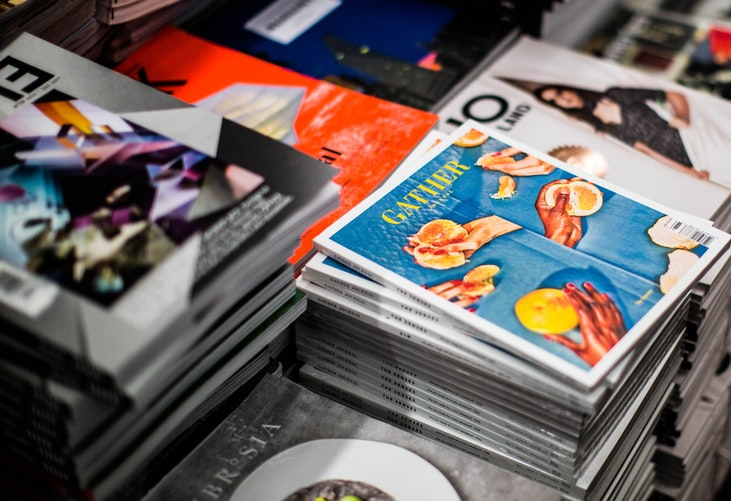
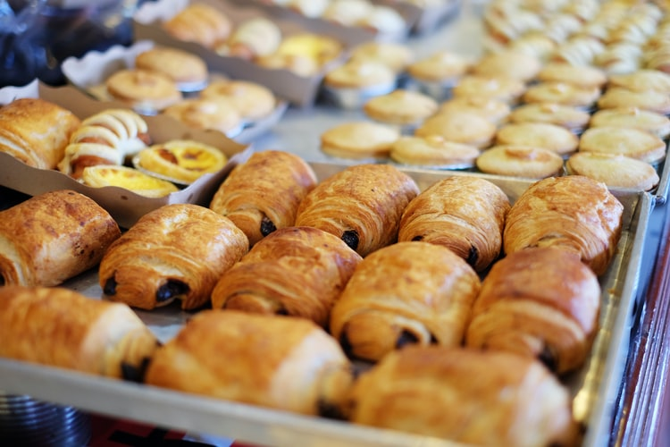

Печатница “Ян Бибиян”
Ако търсите печатница, която да ви предложи качествен продукт на достъпна цена, тогава се обърнете към нас.
Ние сме млад и амбициозен колектив, който е в крак с нуждите на съвременните клиенти. В нашата малка местна печатница работи персонал, който иска да се докаже, като успешна търговска печатница, която може да предложи голяма гама от решения за всеки клиент. Ние осигуряваме офсетов печат, дигитален печат, широкоформатен печат, табели, дизайнерски и креативни потребителски продукти.
Списъкът с продукти, които можем да произвеждаме е безкраен, като всеки клиент може да разчита на нас за качествен печат, работа в срок и на добра цена. Ние също така можем да предоставим търговска услуга на агенции за графичен дизайн или други печатни компании, за да обслужваме нуждите на своите клиенти.
Старата пекарна
Старата пекарна е име на най-старата и автентична семейна пекарна в региона. Тя е основана през далечната 1965 г., като в нея работят вече трето поколение пекари. Непрекъснатите усилия да подобрят качеството и вкуса на храната допринасят за създаването на дългогодишни приятелства с клиентите ни.
Водени от страстта си да печем страхотен хляб, закуски и сладкиши ние се усъвършенстваме и развиваме. Ние печем, използвайки най-добрите съставки, които можем да намерим, включително пшенично брашно, ръжено брашно, зърнени култури, като и лимец. За избрани хлябове и сладкиши ние прясно смиламе пълнозърнести брашна в подбрана от нас мелница.
Използваме местни ферми за яйца, мляко и млечни продукти, което гарантира високото качество на продуктите. Ние използваме местно произведени съставки и продукти, когато е възможно, и изграждаме трайни отношения с производители от региона.
